👉 點擊頁面任意空白處試試！ 當前頁就是一個 popover slide，框架會根據點擊位置自動定位箭頭方向（東/西/南/北）。
<slide
class="slide-center pop"
data-pop="#info"
data-spot="0.5,0.3"
describe="頁面說明"
>
... 主體內容 ...
<!-- popover 元素：必須是 popover 屬性 + class="arrow" -->
<div id="info" class="arrow" popover>
<div>
<h2>標題</h2>
<p>詳情內容…</p>
</div>
</div>
</slide>結構要點：
<slide class="pop"> 啟用點擊監聽data-pop="#xxx" 指定要彈出的元素 ID 選擇器popover 屬性 + class="arrow"<div> 包一層作為「白底卡片」（CSS 已預置）| 屬性 | 說明 |
|---|---|
class="pop" | 放在 <slide>（或任意祖先）上，啟用點擊彈出邏輯 |
data-pop="#xxx" | 彈框元素的選擇器；ID 推薦，必須在當前頁可選中 |
data-spot="x,y" | 可選固定箭頭尖錨點位置。（無則自動採用點擊位置） 規則： |v| ≤ 1 視為比例（負值表示反向：-0.3 即 1-0.3=0.7）；絕對值 > 1 視為像素值。可只填一個分量留空另一個。 |
id="xxx" popover class="arrow" | 彈框元素三件套；class="arrow" 帶箭頭視覺 |
框架點擊後會：
⑴ 根據 click 座標 / data-spot 計算錨點 (x, y)；
⑵ 調用 showPopover()，讀取 --arrow-size；
⑶ 根據 (x, y) 與 viewport 的關係，自動添加 .arrow-east|west|north|south 類；
⑷ 設置 CSS 變量 --pop-x、--pop-y、--pop-alpha，箭頭精準對準目標點；
⑸ 若點擊在彈框內部，自動切換為「居中模式」並上移避讓。
/* 覆蓋默認尺寸 */
#info {
width: 600px;
height: 420px;
}
/* 覆蓋箭頭大小（默認 35px） */
::popover-open {
--arrow-size: 28px;
}
/* 覆蓋背板色 */
.arrow > div {
background: #fff8e7; /* 默認 #fff */
}一個 slide 內可放多個 [popover]，但 data-pop 一次只彈一個。如需多觸發點， 可在 slide 內部嵌套帶 class="pop" data-pop="#yyy" 的子元素 — 框架使用就近祖先查找 .pop。
<slide>
<div>
<button class="pop" data-pop="#tip-a">A</button>
<button class="pop" data-pop="#tip-b">B</button>
<div id="tip-a" class="arrow" popover><div>... A ...</div></div>
<div id="tip-b" class="arrow" popover><div>... B ...</div></div>
</div>
</slide>::backdrop 區域 → 關閉（瀏覽器原生）🎉 恭喜，你已經完成了 ∅M〇ᶻ Present 全部基礎指引。
現在試試：在頁面任意空白處點一下，看看本頁的 popover 演示 →
∅M〇ᶻ 零末之翎

✓ 點擊位置決定錨點
✓ 箭頭方向自動計算（east / west / north / south）
✓ 邊緣會自動避讓 viewport
✓ 點 backdrop / 按 Esc 關閉
試試在頁面不同位置多點幾次，觀察箭頭朝向的變化 —— 這就是 ::popover-open + --pop-x/--pop-y/--pop-alpha 的協作。
❝ 該效果完全基於原生 Popover API + CSS 變量；無 JS 動畫框架依賴 ❞